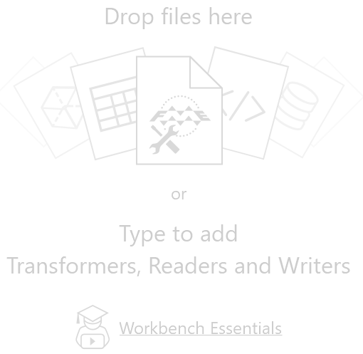
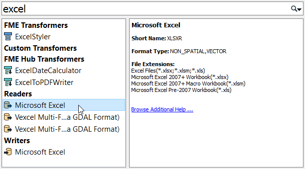
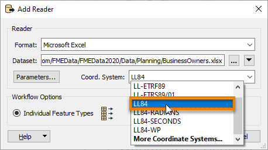
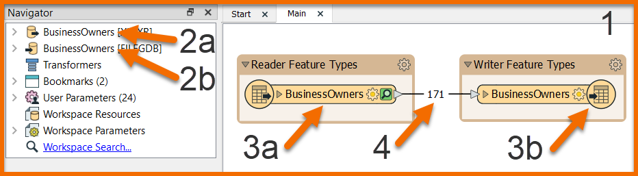
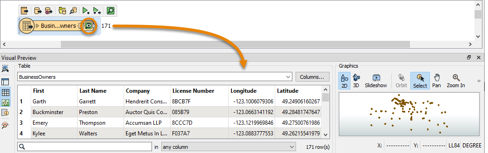

Learning Objectives
After completing this unit, you’ll be able to:
- Describe the FME platform user roles.
- Connect to a data source.
- Understand the concept of a feature type.
- View your existing data.
Starting an FME Project

Sven works as a Planning Analyst for a city’s Economic Development department. He has been given an Excel spreadsheet containing point locations of businesses and needs to load it into an Esri geodatabase. He will use this business data to create guides for each neighborhood of the city to provide to residents, prospective business owners, and tourists.
Before beginning a new project with FME, he knows it is important to consider the different ways people interact with the FME platform. FME users can fall into one or multiple user roles:
- Authors create workspaces using FME Desktop and can publish them to FME Server An author can also create automated or notification-driven workflows in FME Server.
- End-users run workspaces using FME Workbench, FME Server, or an application powered by FME, but they do not create or edit workspaces. An end-user doesn’t need much FME experience and, in the case of applications powered by FME behind the scenes, they don’t even need to be aware they are interacting with FME.
- FME Server Developers implement features and services offered by FME Server into other applications. They primarily interact with the REST API and likely have a strong development focused background. For example, an FME Server Developer might create an open data portal that lets the public pick datasets to download. This application is powered by FME behind the scenes, but the end-user doesn’t know that, as they just interact with the website.
- Administrators install and maintain the FME platform. For FME Desktop, they just have to install the software and might help others with licensing. Administrating FME Server is a bit more involved, including managing security, scalability, and performance.
For this project, Sven is an author. He will create a workspace for himself using FME Desktop and doesn’t plan on sharing it. Maybe later on he will upload it to FME Server for others to use, but not yet.
Connect to Your Data
Sven is starting with an Excel workbook ( BusinessOwners.xlsx) with a single sheet. Each row is a separate business and has information about the business, including the name of the owner, the company name, the business license number, and the location of the business’ primary address. He wants to keep all this information in his new geodatabase. Here are two sample rows of his data.
|
First
|
Last Name
|
Company
|
License Number
|
Longitude
|
Latitude
|
|
Elvis
|
Clay
|
Diam Industries
|
B347A2
|
-123.101472
|
49.2480941
|
|
Noelani
|
Curry
|
Mus Donec Associates
|
1991FF
|
-123.1318356
|
49.28042851
|
Sven begins his data integration project by opening FME Workbench 2020 and clicking New to create a new workspace in FME.

Clicking New opens the canvas, where a translation can be created. The canvas is currently blank, but a reader can be easily added to read the Excel dataset into FME.

Sven types “Excel” on the canvas. As soon as Sven starts typing, the Quick Add dialog appears, and starts suggesting objects that match “Excel”. Listed are all objects that can be added to the canvas: transformers, readers, and writers. Under the Readers heading, Sven selects the Microsoft Excel reader.

The Add Reader dialog appears. The Format is already set as Excel, but the other parameters still need to be set. Sven sets the Dataset parameter to the location of the Excel file, pasting in a URL: https://s3.amazonaws.com/FMEData/FMEData2020/Data/Planning/BusinessOwners.xlsx.

Sven then clicks on the Parameters… button.

The Microsoft Excel Parameters dialog controls how the Excel file will be read, including which sheet(s) to read. The Preview section displays how FME currently sees the data, while the Attributes section displays the attributes (spreadsheet columns, in this case) that FME has detected. The Longitude and Latitude attributes have been automatically detected as X and Y coordinates and set appropriately (under the Type column). They can be set manually if necessary. FME will automatically create points using these attributes when the spreadsheet is read.

The parameters all look correct, so Sven hits OK to close the Excel Parameters dialog. The final parameter to set is the Coord. System parameter.
The Coord. System parameter sets the coordinate system of the data. For some formats, the coordinate system information is contained in the data itself, and FME can read that automatically. The Coord. System currently says “Unknown”, so Sven needs to set it.
Sven wants to use a background map when inspecting the data, so he sets the Coord. System to “LL84”, a commonly used global coordinate system.

Now that all required parameters are set, Sven hits OK to close the dialog and add the reader to the canvas. The canvas now shows the single worksheet from the Excel spreadsheet: BusinessOwners.
Here is a visual example of how FME components relate to Excel components. In the image below:
- The dataset is the XLS or XLSX file (a.k.a. the workbook)
- The feature types are the sheets (a.k.a. tables)
- The features are the rows (the columns are the attributes)

The components of a workspace are represented like this in FME Workbench. In the image below:
- The entire workspace, consisting of the contents of the canvas and the Navigator.
- Readers (a) and writers (b) at the top of the Navigator.
- Reader (a) and writer (b) feature types, shown on the canvas and under their respective reader and writer in the Navigator.
- Features (rows in a table or single pieces of geometry with associated attributes), shown as feature counts on connection lines after a workspace is run.

Sven saves the workspace by clicking on the Save button in the toolbar (the row of icons right below the menu bar) and using the default values provided. Now Sven can run the workspace.

Run the Workspace
Sven clicks on Run in the toolbar to run the translation.

A Translation Parameter Values dialog appears to confirm some parameters. This dialog can be helpful if Sven wants to change parameters before he runs his workspace.

After the workspace runs and the data is read, the Translation Log appears and reports what FME did during the translation and whether the translation was successful or not.

View Your Data
On the BusinessOwners feature type, a copy of all of the features in the spreadsheet has been cached and can be inspected. Caches are a store of all of the features coming out of a particular port and are represented by the green magnifying glass icon. Sven clicks on the green magnifying glass icon to inspect the cached data.
Visual Preview displays a table containing all of the spreadsheet data. The total number of rows (features) is shown in the bottom right of Table View. Graphics View displays the spatial data, which in this case are points.

Sven notices that the BusinessOwners name in the feature type is truncated. He resizes it by double-clicking on its right edge.

Exercise
Now it’s your turn! Follow Sven's steps above to add the BusinessOwners feature type. Sven also wants to include data about public art in his neighborhood guides. Help him out by adding another Excel reader to connect to all the sheets (feature types) in this public art Excel workbook.
The workbook contains one sheet per neighborhood. Each row is a public art installation and contains information about the location, the title of the piece, and its longitude and latitude. Tip: you don’t need to download the file; you can just paste the URL into the Dataset parameter of the Add Reader dialog. Your canvas should now look like the image below.